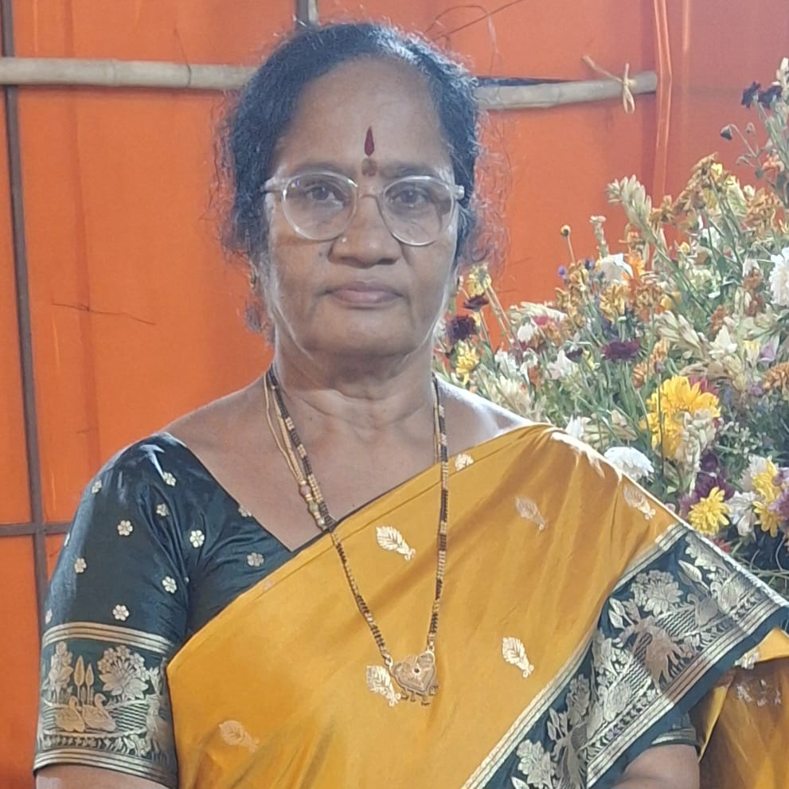
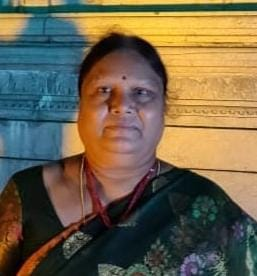

Gajula Yadamma
President
Gajula Yadamma leads Mahalaxmi Mahila Mandali with exemplary foresight, ensuring our initiatives deliver compassionate care and dignity to elderly women.

President
Gajula Yadamma leads Mahalaxmi Mahila Mandali with exemplary foresight, ensuring our initiatives deliver compassionate care and dignity to elderly women.

Vice President
G. Hemalatha supports organizational governance, working closely with the executive leadership to strengthen our programs and welfare activities.

Secretary
P. Yadamma oversees daily administrative operations and ensures transparent coordination across all organizational endeavors.

Treasurer
P. Chandrakala manages financial operations, maintaining accountability and ensuring proper resource allocation for resident welfare.

Joint Secretary
N. Sandhya Rani assists with secretarial responsibilities, outreach initiatives, and community engagement efforts.

Executive Member
K. Padma actively contributes to strategic planning, resident care standards, and ongoing social welfare projects.

Executive Member
J. Jagruthi serves as a core executive member, focusing on facility development and resident well-being.